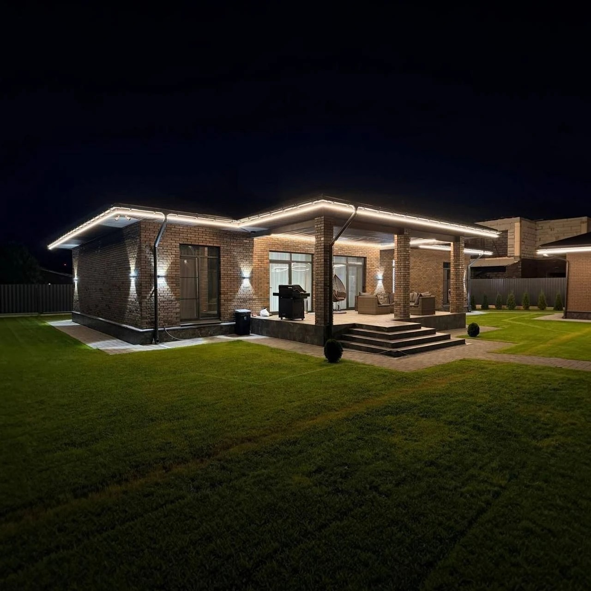
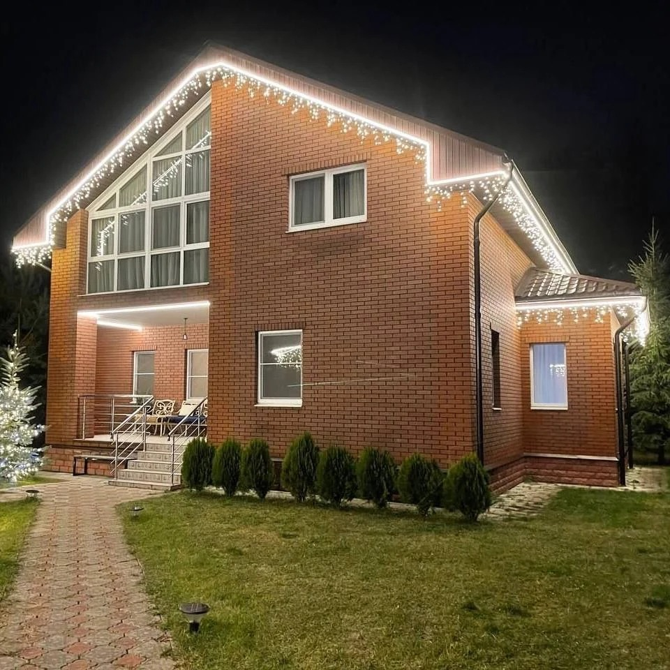
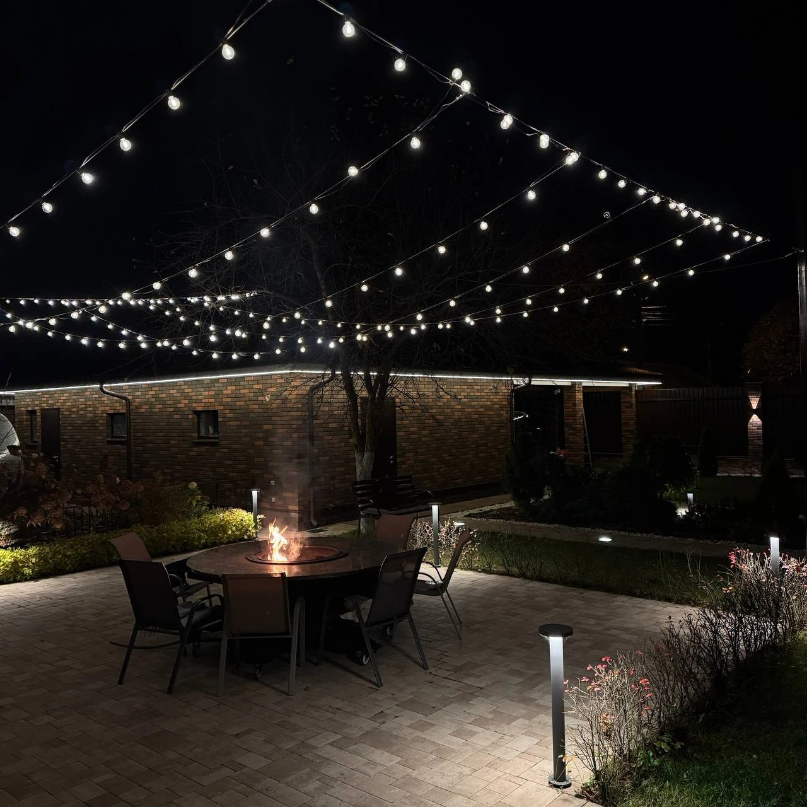
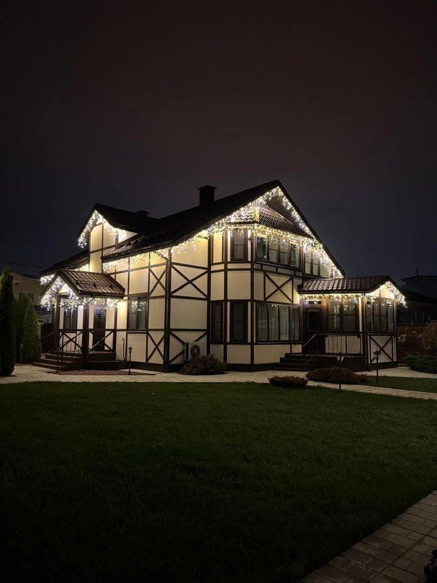
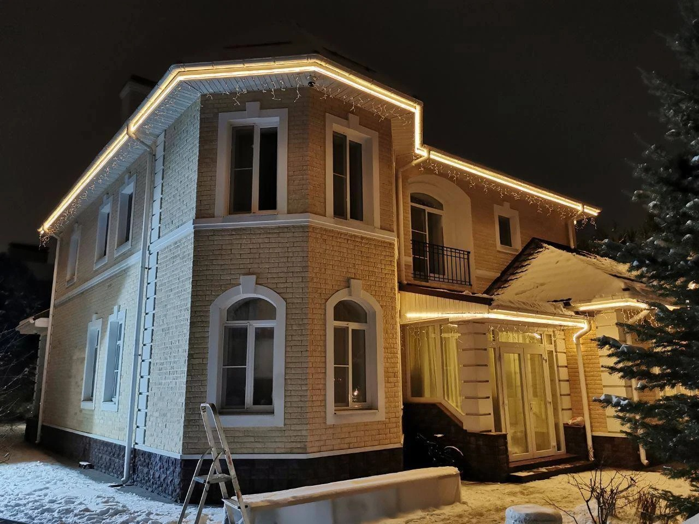

Знакомимся
Позвоните или напишите. Расскажите о доме, пришлите фото и пару слов о том, какой свет вам нравится.
Освещение домов и участков
Подчеркнём архитектуру дома.
Сделаем участок уютнее и светлее.
Гибкий неон, гирлянды и уличное освещение: от контура кровли до дорожек, террасы и бассейна.

Работаем по договору. Условия гарантии — в договоре.
Решение под ваш домПодбираем оформление под архитектуру
Стоимость до начала работСначала обсудим оборудование и монтаж
Удобный способ связиТелефон и мессенджеры на выбор
Что освещаем
Устанавливаем контурную подсветку, декоративные гирлянды и уличное освещение. Подбираем свет для фасада, террасы, дорожек и зоны отдыха с учётом вашего дома и задачи.


Наши работы
Фотографии выполненных работ.
Откройте проект, чтобы рассмотреть детали.

1 фотоОсвещение фахверкового домаГирлянды по линиям фасада
1 фотоЗимняя подсветка фасадаСветовой контур и гирляндыAMBI в работе
Подготовка, крепление, подключение и результат. Посмотрите короткое видео с объекта, чтобы познакомиться с нашей работой.
Как работаем
Без сложных брифов.
Сначала знакомимся с вашей задачей.
Позвоните или напишите. Расскажите о доме, пришлите фото и пару слов о том, какой свет вам нравится.
Бесплатно выезжаем, смотрим объект и обсуждаем детали: где нужен свет и какой эффект хочется получить.
Подбираем оформление и рассчитываем стоимость под ваш дом. Обсуждаем всё до начала работ.
Монтируем подсветку, проверяем результат и показываем, как ей пользоваться. Освещение готово к использованию.
Выезд за наш счёт
Москва и Московская область
Посмотрим объект, обсудим, где нужен свет, и подберём решение под вашу задачу.
Ответы на вопросы
Расскажите о доме и своих пожеланиях.
Мы поможем с выбором освещения.
Пришлите фото дома или участка и расскажите, что хотите осветить. Цена зависит от выбранного оборудования, длины контура и особенностей монтажа. После замера согласуем решение и стоимость до начала работ.
Да. Подберём размещение подсветки и способ крепления с учётом фасада и кровли. Детали подключения обсудим на замере.
Да. Можно осветить вход, отдельный участок кровли, террасу или дорожку. Не обязательно оформлять весь дом сразу.
Вариант управления зависит от оборудования. При подборе можно обсудить обычное включение, таймер и управление со смартфона.
Нет. Устанавливаем и постоянное уличное освещение: контур фасада, подсветку дорожек, террас и бассейнов. Праздничные гирлянды — одно из направлений.
Связаться с AMBI
Пришлите фотографии дома или участка в удобный мессенджер. Расскажите об идее — поможем выбрать освещение.